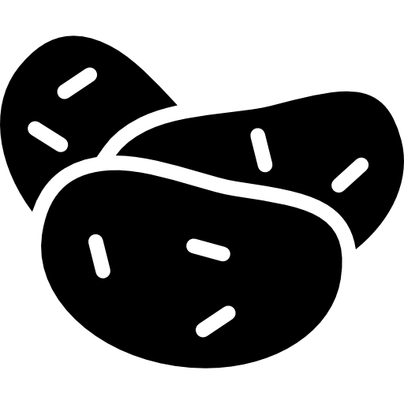

Allgemeine Einstellungen
Sichtbarkeit inaktiver Knoten 40%
Linseneinstellungen
VegetarischZeit
Von
0:00 Uhr
Bis
23:59 Uhr
Linsengröße
50%
Legende
| Gericht: Die Größe des Knotens steigt mit der Anzahl der Zutaten | |
| Getreide | |
 | Eispeise |
| Fertiggericht | |
 | Fisch |
| Fleisch | |
|  | Kartoffelprodukt |
| Milchprodukt | |
 | Obst&Gemüse |
 | Obstprodukt |
| Süßware | |
| Teigware | |
 | Nüsse |